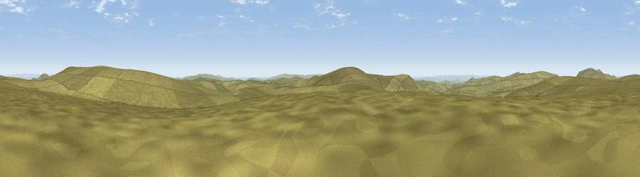

Black Hill
#17723 in England · top 30% of its area beats it · —Where it is
The exact computed spot (SX 60425 84625). Click the marker for map links.
The view, rendered

A 360° render of this exact spot computed from the terrain model, tree cover and land cover — summer colours, afternoon light, calibrated against photographs of famous viewpoints. Real trees, hedges and buildings will differ in detail.
The panorama
Grey silhouette: terrain skyline in each direction (720 bearings, Earth curvature and refraction included). Dashed green: skyline with trees (+15 m) and buildings (+8 m) as obstacles. Blue strip: how far the ground is visible on each bearing.
Where the view opens
Wedge length = distance to the farthest visible ground on that bearing (vegetation-aware). Rings at 10, 25 and 50 km.
What fills the view
99% grassland ·
Angular shares of the visible panorama (visual magnitude), not map area. Landscape diversity 0.04 (0–1 Shannon).
Key numbers
More beautiful places nearby
The staircase of upgrades: each row has a higher view potential than everything closer. Driving times are estimates from straight-line distance, calibrated against real road routing — check an actual route before setting out.
| Place | Direction | Drive | Score |
|---|---|---|---|
| Hangingstone Hill | NE · 2 km | ~5 min | 69.9 |
| High Willhays | NNW · 5 km | ~11 min | 76.4 |
| Great Links Tor | WNW · 6 km | ~12 min | 77.8 |
| Yes Tor | NNW · 6 km | ~13 min | 78.5 |
| Viewpoint near North Bovey | E · 13 km | ~23 min | 79.3 |
| Viewpoint near Dousland | SSW · 15 km | ~27 min | 81.0 |
| Shell Top | S · 21 km | ~35 min | 81.8 |
| Viewpoint near Lee Moor | S · 22 km | ~37 min | 82.7 |
50.64455, -3.97544 · source: osm peak · position refined by local search. Computed location — check access rights before visiting.